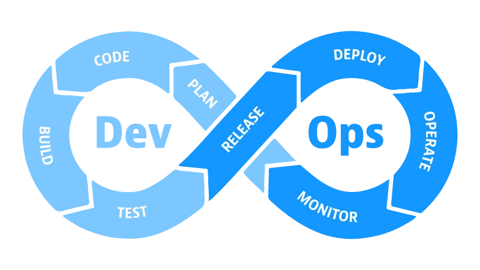

DevOps (tuleneb sõnadest Development ja Operations) ei ole üksnes tarkvaraarenduse metoodika, vaid kultuuriline lähenemine ja praktikate kogum. Selle eesmärk on ühendada arenduse (Dev) ja IT-halduse (Ops) meeskonnad, et lühendada arendustsüklit ning tagada kvaliteetse tarkvara pidev ja usaldusväärne tarnimine.
DevOps-i protsessi kujutatakse sageli lõpmatuse sümbolina, mis rõhutab pidevat koostööd ja parendamist. Elutsükkel koosneb järgmistest korduvatest etappidest:
DevOps-i elutsükkel moodustab pideva ja katkematu ringluse.

DevOps-i arenguga on tekkinud mitmeid alamlähenemisi, mis keskenduvad konkreetsetele valdkondadele:
DevOps-i tuumaks on pidev integreerimine ja pidev tarne (CI/CD). Automatiseerimine vähendab inimlikke vigu, kiirendab tagasisidet ning võimaldab uusi funktsioone kasutajateni viia kiiresti ja järjepidevalt. Ilma automatiseerimiseta ei oleks DevOps praktiliselt toimiv.
| Eelised | Puudused |
|---|---|
| Kiirem tarkvara tarnimine ja juurutamine | Vajab suurt kultuurilist muutust organisatsioonis |
| Parem stabiilsus ja kiirem vigade parandamine | Algne seadistamine võib olla keeruline ja kulukas |
| Automatiseerimine vähendab käsitööd | Pidev vajadus uute tööriistade ja oskuste õppimiseks |
| Tõhusam koostöö arenduse ja halduse vahel | Turvariskid valesti seadistatud automatiseerimise korral |
| Kvaliteetsem tarkvara tänu pidevale testimisele | Keeruline skaleerida väga suurtes organisatsioonides |